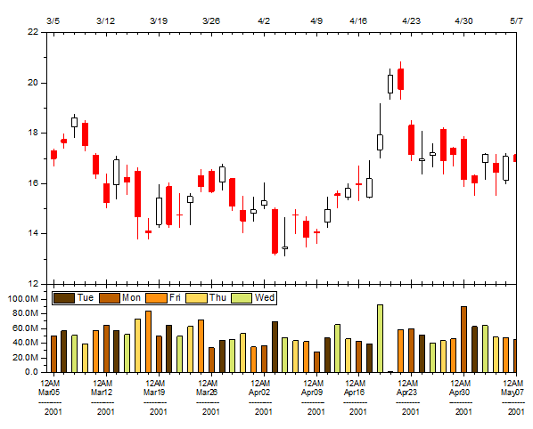

OHLC - 出来高株価チャート
OHLC - 出来高株価チャート
サマリー
このチュートリアルは始値、高値、安値、終値と共にその時の出来高を表す株価チャートの作成方法を示します。

必要なOriginのバージョン:Origin 2016 SR0
学習する項目
- OHLC-出来高を表す株価チャートを作成する
- 軸のスケールタイプを株式市場の休日に設定する
- 目盛ラベル（複数行のラベル）の書式を設定する
- 曜日ごとに異なる色で塗りつぶして棒を分類する
- 色で分類された棒の凡例を作成する
ステップ
ラーニングセンターにある「このグラフ」を参照してください。(ヘルプ: ラーニングセンター メニューを選択、または キーボードのF11
キーを押して、グラフサンプル：金融プロットを選択します)
- ワークシートの列C～Gを選択して、作図：特殊グラフ：株価チャート：OHLCを選択してグラフを作図します。
- 左下のレイヤのX軸をダブルクリックして、X軸ダイアログを開きます。スケールタブに行きます。タイプは初期設定が離散になっています。これは、X軸が週末や休日を自動的にスキップしているからです。
- 軸範囲を2001/3/3から2001/5/7に変更します。主目盛の項目で、タイプが増分になっていることを確認します。値に1weekを入力します。副目盛の項目で、タイプがカウントになっていることを確認します。カウントに5を入力します。適用ボタンをクリックします。週末や休日がきれいにスキップされています。
- 下軸のラベルを複数行で表示するには、目盛ラベルタブを開きます。表示タブを開きます。表示ドロップダウンリストからカスタム表示を選択します。カスタム表示テキストボックスに以下のテキストを入力します。
hhtt MMMdd --------- yyyy
フォーマットタブを開き、フォントサイズを10にしてテキストの折り返しを「レイヤ長による」に設定します。
適用ボタンをクリックします。
- スケールタブを開き、左パネルで垂直方向を選択して、開始と終了を0、120M
に設定します。適用ボタンをクリックします。
- ダイアログ左下にあるレイヤドロップダウンで、1 を選択してレイヤ1の軸ダイアログに切り替えます。垂直方向が選択された状態のまま、開始と終了を12
と22 にします。OKボタンをクリックして、ダイアログを閉じます。
- レイヤ2の縦棒グラフをダブルクリックして、作図の詳細（プロット属性）ダイアログを開きます。パターンタブで、塗りつぶし色ドロップダウンリストを開き、ポイント毎：インデックス：Col(B)："Week
Day"を選択します。また、カラーリストとして D01 Pumpkin Patch を選択します。OKボタンをクリックして、ダイアログを閉じます。
- レイヤ2をアクティブにして、メニューからグラフ操作：凡例：カテゴリー値を選択します。開いたダイアログで、デフォルトの設定のままOKをクリックします。グラフに凡例が追加されます。凡例の境界を表示するためにクリックし、Ctrlキーを押しながら境界をドラッグして凡例の内容を1行表示にします。
- サイズと位置を適宜変更します。最終的に、下図のようなグラフになります。